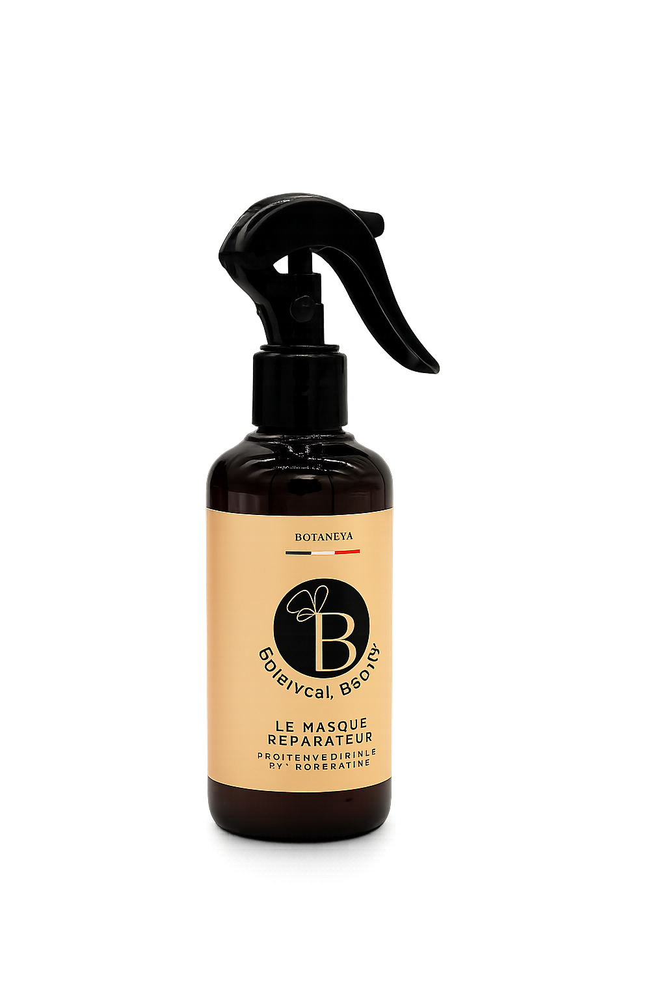
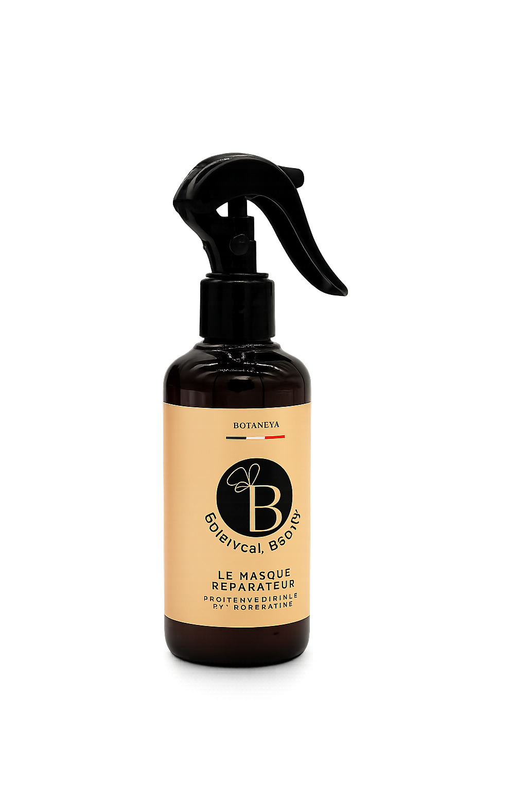
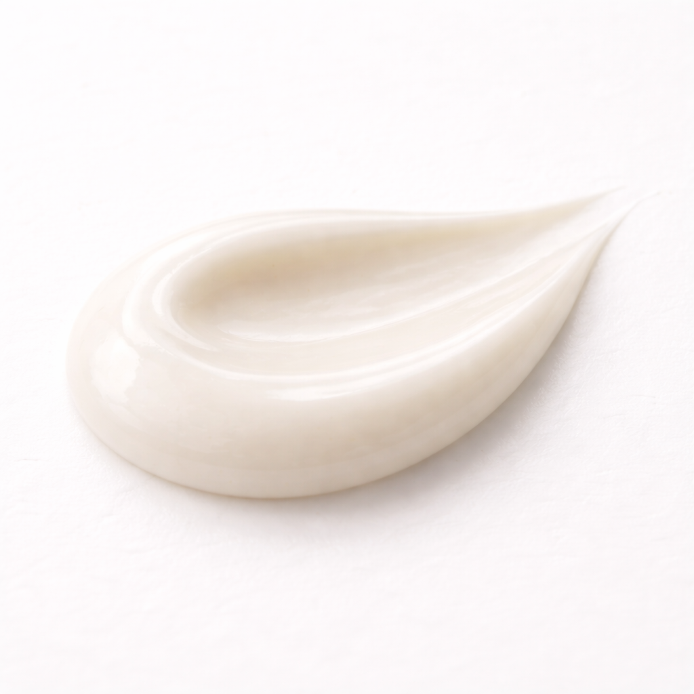

Masque réparateur
95% d'ingrédients d'origine naturelle, sans sulfat, sans parabène, sans silicones Riche en huile végétales pressé à froid , végan et non tester sur les animaux d'origine naturelle conforme CE n°1223/2009 Fabriqué en france

39,99€
PRODUITS NATURELS 🌿
Des actifs purs et puissants, sans compromis sur la qualité.
FAIT EN FRance 🇫🇷
Conçu et fabriqué en France avec un savoir-faire expert.
FORMULE UNIQUE ✨
Des compositions exclusives et réfléchies pour des cheveux sublimés et fortifiés.